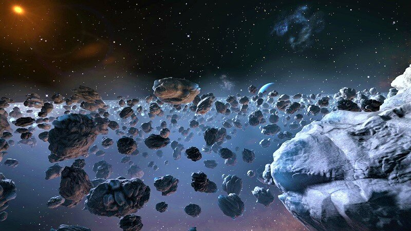

Общая информация о Солнечной системе
Солнечная система — это система планет, спутников, астероидов, комет и других тел, вращающихся вокруг Солнца.
Она включает в себя восемь планет: Меркурий, Венера, Земля, Марс, Юпитер, Сатурн, Уран и Нептун.

Солнце
Солнце — это звезда, которая находится в центре Солнечной системы и обеспечивает свет и тепло для всех планет.

Астероиды
Астероидный пояс находится между орбитами Марса и Юпитера и состоит из множества каменных тел.

Кометы
Кометы — это ледяные тела, которые при приближении к Солнцу образуют хвост из газа и пыли.